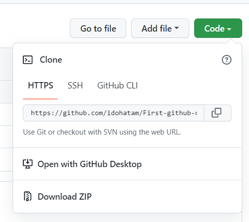
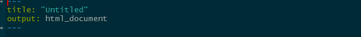
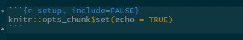

conda_whats_installed()1 Lab 1: Intro to RMarkdown, GitHub, and Computational Environment Setup
2 Introduction
Welcome to your first Biol4315 lab. In this lab, you will:
- Set up your computational environment for the rest of the semester.
- Learn how to use R Markdown to create reproducible reports.
- Set up version control for your project using Git and GitHub.
- Learn how to pull and use Docker containers for reproducible bioinformatics workflows.
- Begin building your own personal project repo that you’ll use throughout the term.
This lab is foundational to the rest of this course, and while it is a bit technical, it will equip you with tools you’ll use every single week. Let’s get started.
3 Computational environment setup
Note
Goal: Configure your lab computer and install required tools using the course R package.
Select your lab computer and start RStudio — You will use this same machine throughout the course so make sure to note wher you sit.
Visit the computational environment package repository
Follow the tutorial on the GitHub README page - This will:
- Install the computational environment R package
- Install
Miniconda(if not already installed) - Install essential third-party tools for upcoming labs
- Install required R packages
Once the R package is installed set up your computational environment by running:
This is the only function you need to run to complete the setup.
3.1 Setting up conda virtual environments
Now that conda is installed, it can be used to install tools within virtual environments. Using a virtual environment provides a clean, isolated space to install and manage bioinformatics tools without interfering with your system-wide packages or other projects. This makes your workflow more reproducible and avoids potential conflicts between software dependencies. The repo includes instruction for the installation of the long read genome assembler flye, due to some conflicts in python versions for different dependencies we will install it in a conda virtual environment with a less recent python version. Follow the tutorial in the repo and install flye on your computer. Make sure that the installation is successful as you will use flye for your final course project.
Next setup a conda environment called sequali_env, and install the QC tool squali in it. That’s a QC tool for output from sequencers and you will use it in your next lab.
4 Git & GitHub setup
4.1 Setting up a github account and connecting it to your computer git cliante
Note
Goal: Set up a GitHub account and connect it to your local git client.
The Git and GitHub component will follow a few parts from the book Happy Git and GitHub for the R user. The book is a great resource and I suggest you follow it if you wish to gain a deeper understanding of version control.
If you haven’t already, create a
GitHubaccount and sign-in to it. I suggest following the guidelines for user name proposed in chapter 4 of Happy GitConfigure Git on your computer with your
GitHubusername and email: Your lab computer should have git installed, you can test that the installation works by running the following code in the terminal (or in RStudio’s terminal tab)
git -h- Next lets configure
gitwith yourGitHubusername and email.
Important
Note that it is important that you use the same email you used for your GitHub account
git config --global user.name 'GitHub username'
git config --global user.email 'your_email@email.com'
#this will check if your account has been set
git config --global --list4.2 Connecting git and GitHub to RStudio using a GitHub first approach
Note
Goal: Connect RStudio to GitHub and practice collaborative version control.
On your
GitHubpage start a repo call it Biol4315_funzis_repo_your_initials.Set up an HTTPS authentication token by runnig the following code chunk which will open up the relevant page on github
- Make sure that “repo”, “user”, and “workflow” are selected (should be pre-selected when you run the code)
- Set the expiration time for this token to at least 90 days.
- Click submit and generate a token. Once the token is generated, copy it.
usethis::create_github_token()Run the following code it will prompt you to supply a password or a token, paste your token when prompt.
- This will make sure that RStudio can access your
GitHubrepo
- This will make sure that RStudio can access your
gitcreds::gitcreds_set()Clone your GitHub repo using RStudio, cloning is copying the repo to your computer so you can work on it locally.
Copy your repo’s URL (see image)
Follow the code chunk to connect
gitandGitHubto RStudio

usethis::create_from_github(
"https://github.com/YOU/YOUR_REPO.git",
destdir = "~/path/to/where/you/want/the/local/repo/")Look at the file tab for a
readme.mdfile, if present you’re doneNote that you are now working on an RStudio project that has the same name as your
GitHubrepo.
4.3 First commits
Commits are changes to your project you are ready to be archived by git and pushed to GitHub, this is the core of version control. Commits allow you to track changes to your your project and code, and commit comments allow you to archive and track the reason for each change.
Open the
readme.mdfile and add the line “This is a line I added via RStudio” to the readme file and save it.Open the git tab stage the change by checking the box next to the
readme.mdfile and press commit. Make a descriptive comment.Start a new R script file, save it as
practice.Rstage and commit it.Push the commits to
GitHubby pressing the push buttun on the git tab.Refresh your
GitHubpage to make sure it is up to date.
4.4 First colab
GitHub allows you to collaborate on different projects while making sure changes are traked and reversible. One way to collaborate on a project you’re interested in, is to fork it over to your GitHub page, make changes and suggest them to the owner of the repo you forked. Those are called pull requests. Here’s how to do it:
Swap GitHub usernames with a partner.
From their
GitHubpage Fork your partner’s funzis_repo to yours.Clone the forked repo so you can work on it locally (now that you know how to)
Add a small markdown file (
hello.md) to their repo.Get chatGPT to write a haiku and paste it to
hello.md.Stage, commit and push your changes to your repo.
From your
GitHubpage submit a pull request back to them.Review and accept your partner’s pull request.
That’s it, you’ve just successfully collaborated on a project.
5 Using RMarkdown for documentation, reports, and reproducible workflows
Note
Goal: Create your first .Rmd document, understand the structure, render it, and begin using it as your scientific notebook for this course.
5.1 Why RMarkdown
R Markdown allows you to combine code, output, and narrative in a single, shareable file. This format is the foundation of reproducible data science and will serve as your primary platform for documenting your lab work, results, and reflections throughout the course. You’ll use it to generate reports, keep your notes organized, and track the evolution of your genome project.
5.2 Starting a RMarkdown document
Get back to your own lab RStudio project
Load the
rmarkdownandknitrpackages
library(rmarkdown)
library(knitr)Go to
File -> New File -> R Markdown...name the titleBiol4315 Lab-1 Report, and keep the format as htmlInspect the document, at the top you will find a
YAMLheader which holds the document meta-data such as title, author, and output format.

YAML header- Inspect the rest of the document note the code chunks and text chunks note the
##which indicates a secondary title.

Save the file, name it
Biol4315_lab1_report_your_initials.RMD, stage and commit the new file.Render the
.Rmdfile by pressing Knit. Rendering runs all evaluated code chunks, since your code is documented in chunks the self contained document makes the output reproducible.Inspect the html output.
5.3 Modifying your document
Add a primary title above the first secondary title with the name of the partner who’s
GitHubrepo you forked.Below the last line of template add the following:
A code chunk that isn’t evaluated or ran when the document is rendered that installs the
veganpackageA Text chunk that explain that your going to load the
ggplot2package and plot a scatter plot of speed vs dist from the cars datasetA code chunk that loads the
ggplot2package and plots the scatter plot
Save, stage, commit, and push changes.
6 Using containerized environments with Docker desktop
Note
Goal: Understand what Docker is and how to run bioinformatics tools in isolated, reproducible environments.
6.1 What are Docker and containerized environments?
Docker is a tool that allows us to package software — including all of its dependencies — into containers that can run reliably on any system. In bioinformatics, this is particularly useful because many tools have complex installation requirements or conflict with one another. By using Docker containers, we avoid those issues and ensure both that usability, since there is no need to install anything, and reproducibility.
6.2 Why Docker in this course?
In your genome assembly project, you’ll be using tools that are often deployed as containers to avoid conflicts. Furthermore, when using systems were you don’t have admin privileges such as the computer clusters of the Digital Research Alliance of Canada, Docker containers circumvent the need to install software allowing you to conduct your work safely. Learning Docker now means you’ll be ready to run genomics tools like BUSCO, Funannotate, and more later in the semester.
6.3 Basic Docker commands
Important
Note: For this part, make sure that docker desktop is running. If not, select it from the application launcher. If the application is running yet the terminal doesn’t recognize docker as a command, you will need to set the path to docker manually using the following code
echo 'export PATH="$HOME/.docker/bin:$PATH"' >> ~/.zshenv
source ~/.zshenvAfter running this code make sure to restart the terminal window.
Open a terminal or shell in RStudio or your system
Pull the BUSCO image:
docker pull ezlabgva/busco- Check that it works by running:
docker run --rm --platform linux/amd64 ezlabgva/busco busco -hThe run command is intended for a non-interactive run where the order of operation is supplied in advance.
The --rm flag tells docker to remove the container upon exit so it doesn’t stay in the background.
The busco argument tells the run function to run a containerized image of busco.
The -h flag tells busco to display the help menu.
The --platform linux/amd64 makes sure that the linux version is compatible with apple silicon.
You should see the help menu, which confirms it installed correctly.
In your
.Rmdfile, include an un-evaluated code chunk that shows that pulls the funannotate image from docker hub, you might need to search funannotate to find the proper link.Going back to the conda environments, include an un-evaluated code chunk for the installation of
squaliwith conda you did earlierMake sure to save, stage, commit, and push your changes to the
.Rmdfile.
7 Lab 1 assignment
Make sure your
GitHubrepo is set.Make sure all modification to your
.Rmdare pushed toGitHub.Email a link to your repo to your Lab instructor.
8 Coming next week
Next week, we’ll begin learning about sequencing data and how to assess the quality of both short- and long-read files. Be sure your GitHub repo is clean and working—you’ll be adding to it regularly!